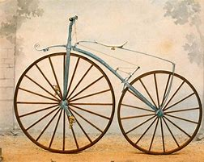
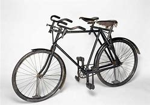
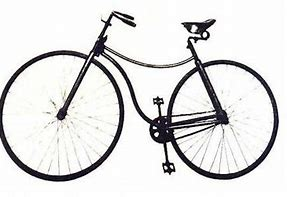

Las bicicletas son cada vez más ligeras y sofisticadas, y su uso está cada vez más extendido: no se trata solo de un juguete para niños o de un vehículo deportivo, sino que muchas ciudades tienen sistemas públicos de alquiler por horas y carriles bici para fomentar su uso.

Sin embargo, hubo un tiempo en el que no era tan fácil verlas por las ciudades e incluso estuvieron consideradas como una novedad tecnológica pasajera. Aprovechamos que este miércoles es el Día Mundial de la Bicicleta y que además hace 200 años del primer modelo para repasar cómo era ir en bicicleta hace más de un siglo. La bicicleta del barón alemán Karl von Drais, de 1817, está considerada como la pionera. La llamó “máquina corredora” (laufmaschine en alemán) y la prensa la llamó Draisine o velocípedo. Estaba construida en madera y funcionaba empujándose con los pies. El objetivo de Von Drais era ofrecer un medio de transporte más barato y fácil de mantener que los caballos. Ganó cierta notoriedad, hasta el punto de que el poeta John Keats habló de este invento como de “la nada del momento”, según recoge The New York Times.

Se atribuye la invención de la bicicleta a pedales al herrero escocés Kirkpatrick MacMillan, en 1839, aunque quien empezó a fabricar su modelo fue el inglés Thomas McCall en 1869. Algunos historiadores dudan de que esta invención se pueda atribuir a MacMillan: no quedan ni diseños ni modelos anteriores a la década de los 60.En los años 60 se popularizó el modelo vendido como velocípedo, pero llamado bone shaker (agitahuesos), por lo que ocurría cuando se llevaba por calles empedradas. El pedal iba en la rueda delantera. Aunque es posible que hubiera modelos anteriores, el fabricante de carritos para bebés Pierre Lallement fue el primero en patentar la bicicleta a pedales.En 1870 comienza a fabricarse la bicicleta de rueda alta, siendo uno de los modelos más conocidos (y caros) la Ariel, de James Starley. Aunque ahora resulte extraño, estas bicicletas eran más cómodas que sus predecesoras, pero su popularidad fue limitada porque, según la web Ibike, “necesitaban un acróbata”. Se trata de la primera bicicleta fabricada totalmente en metal, gracias a los avances de la metalurgia a la hora de fabricar piezas ligeras y pequeñas. Las ruedas eran cada vez eran grandes porque así se avanzaba más con cada pedalada. De hecho, algunos modelos llegaban a los 40 kilómetros por hora. Como la seguridad era un problema, también se fabricaron modelos con tres o cuatro ruedas.
A partir de la década de 1880 surgen las llamadas “bicicletas de seguridad”, precisamente para ahondar en el riesgo de caídas de los modelos anteriores. La primera es la Rover, obra del ingeniero J. K. Starkley. Son bicis ya muy parecidas a los actuales, con dos ruedas del mismo tamaño y el cuadro en forma de diamante. En 1888 John Dunlop inventó además las ruedas neumáticas, haciendo más cómodos los trayectos. Y en 1889, el estadounidense Isaac R. Johnson patenta una primera bicicleta plegable. A partir de la década de los 90, las bicicletas comienzan a producirse en masa. Y las mujeres no solo comienzan a usarlas cada vez más, sino que, como recordaba Smoda, se convirtieron “en todo un símbolo de libertad para el sector femenino y muchas veces estuvo asociada a movimientos sufragistas”.
Los automóviles comienzan a extenderse a partir de los años 20 y los fabricantes de bicicletas se fijan en un nuevo público: los niños. Los diseños, explica Ibike, eran cada vez más ostentosos y llamativos, incluyendo en la década de los 50 elementos de diseño que recordaban a aviones y a cohetes Cuál ha sido la evolución de la bicicleta Durante los comienzos, las primeras bicicletas rodantes eran muy poco eficientes. Las mejoras de las características como la tecnología, construcción, forma, peso y materiales, han impulsado a este vehículo sostenible tan importante. Es difícil atribuir este invento a una sola persona ya que ha sido producto de una evolución constante. Personajes ingeniosos construían vehículos para uso propio, mucho antes de que los grandes industriales se dedicaran a ello. La bicicleta se ha inventado varias veces en diferentes lugares del planeta, aunque parece proceder de Francia. Está demostrado como falso, que en 1790, surgió de manos de Comte De Sivrac un artefacto de dos ruedas llamado Celerífero que carecía de dirección y era impulsado con los pies. Un caballo de madera construido para sus hijos, con sólo dos ruedas, en vez de cuatro. Muy similar a la creación de Leonardo da Vinci y poco práctica, según se decía.

Qué se usaba antes de la bicicleta Antes de aparecer la primera bicicleta de la historia, se conoció la Draisiana. Este fue el primer vehículo de dos ruedas y un manillar. Contaba con un pequeño listón de madera en el que reposaba una montura pequeña. Ahí, permanecía sentada la persona y utilizaba sus pies de forma alterna para impulsar y darle velocidad a la misma. Con sus manos, podía sostener una vara elaborada en madera que permitía girar la dirección hacia donde quería dirigirse el conductor. Los velocípedos de Karl von Drais 1785-1851 La primera bicicleta de la historia como tal se le atribuye en 1817 al alemán Karl von Drais. Aunque es posible que la existencia de las bicicletas date de mucho antes de los años 1800. Era conocida como Draisiana o velocípedo. Era una máquina que no tenía pedales. Un celerífero con rueda delantera móvil. Se le conocía también como «Laufmaschine» que se traduce como “máquina andante”. Surgió la inquietud del “vélocipède”. Fue el primer transporte de dos ruedas que podía ser propulsado por un humano. Solo contaba con una manilla giratoria o timón, carecía de una cadena de transmisión. Provocó gran curiosidad en las calles de París a mediados del siglo XI